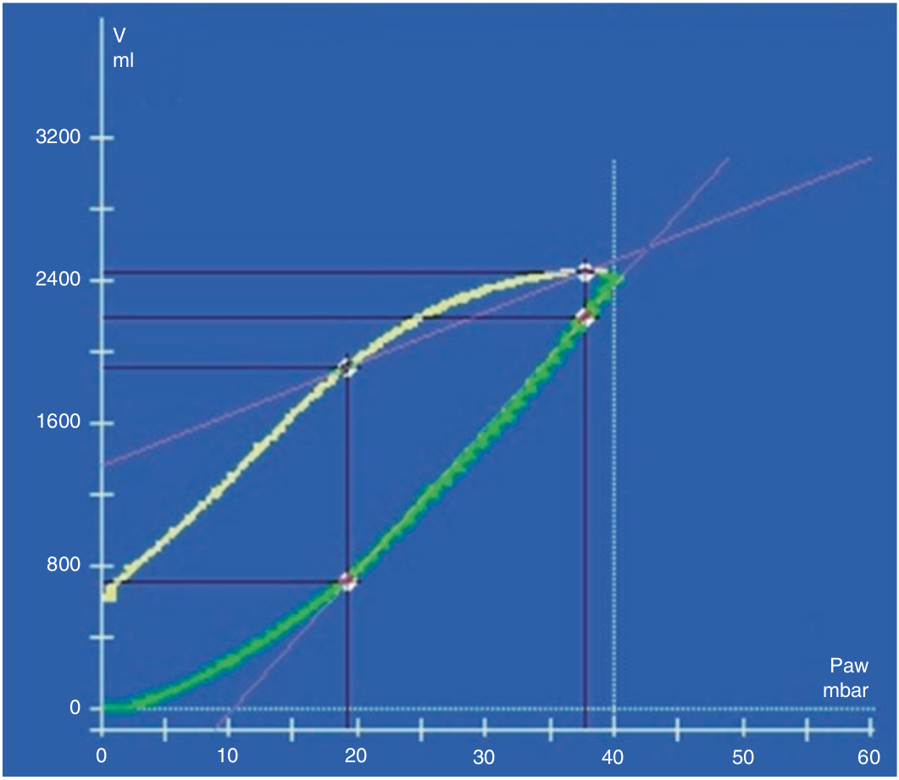

هستره زیس عبارت است ناحیه بین شاخه صعودی و نزولی لوپ فشار-حجم. در بیمار ARDS بعلت وقوع بازگشائی در ساخه صعودی و بازبسته شدن در شاخه نرولی، مقدار هیستره زیس خیلی بیشتر از ریه نرمال است. بازگشائی در فشار بالاتری نسبت به بازبسته شدن روی میدهد. بنابراین حجم سیستم تنفسی در در هر سطح فشاری، در فاز نزولی بیشتر از صعودی است. هر چه این تفاوت حجم بیشتر باشد، استعداد بازگشائی بیشتر است. اندازه گیری هیستره زیس مشکل است ولی از روی تفاوت حجم در فشار ۲۰ سانتی متر آب بین شاخه صعودی و نزولی بخوبی قابل تخمین است. اگر تغییر حجم بیشتر از نیم لیتر باشد، به معنای استعداد زیاد برای بازگشائی است.

در مورد هیستره زیس کدام مورد غلط است؟
۱ - هیستره زیس تفاوت حجم بین شاخه صعودی و نزولی است
۲ - هیستره زیس مساحت بین دو شاخه صعودی و نزولی لوپ است
۳ - هیستره زیس در بیماران دارای استعداد زیاد برای بازگشائی بیشتر است
۴ - هیستره زیس عمدتا به علت بازگشائی در فاز صعودی و باز بسته شدن در فاز نزولی در ARDS است
۵ - از روی تفاوت حجم در فشار ۲۰ سانتی متر آب بین شاخه صعودی و نزولی میتوان هیستره زیس را تخمین زد